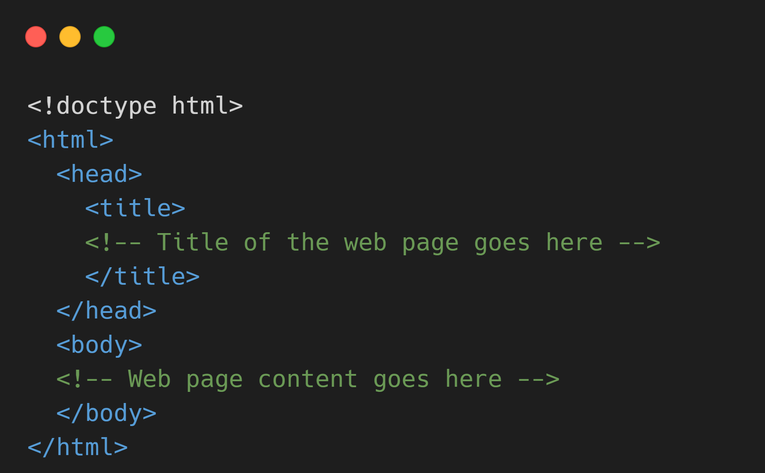

What is HTML
HTML (HyperText Markup Language) is used to structure and format the content of websites on the World Wide Web. Web Developers use it to create a skeleton of modern websites and web apps.
What is HTML?
In simple words, HTML is the primary building block to create and structure website content.
Let's see what HyperText Markup Language means.
- HyperText
HyperText is a way of organizing text that allows the reader to easily navigate and access related information. It takes the reader to a different part of the same web page, or to a different web page altogether. - Markup language
A markup language is a computer language that is used to add structure and formatting to a text document. Markup languages use a system of tags to define the structure and content of a document. These tags are interpreted by a program or application to display the document in a specific way.
Example of HTML
Let's see a simple example of HTML.

How to Create an HTML File (Step by Step)
Creating an HTML file is easy and can be done in just a few simple steps:
- Open a text editor such as Notepad (Windows), TextEdit (Mac), or a code editor like Visual Studio Code.
- Start by creating a new document.
- Add the following lines to your document: 
- Customize the content within the HTML structure to suit your needs.
- Save the file with an .html extension, for example, "my-webpage.html".
- You've now created your HTML file! You can open it in a web browser to see your web page.